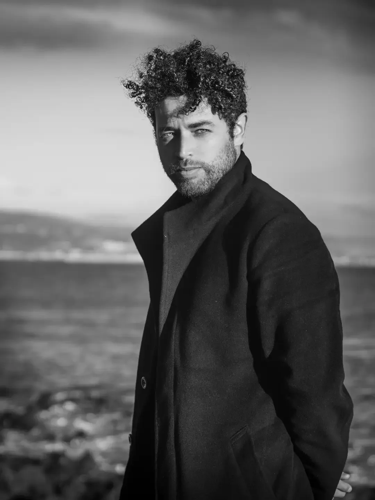
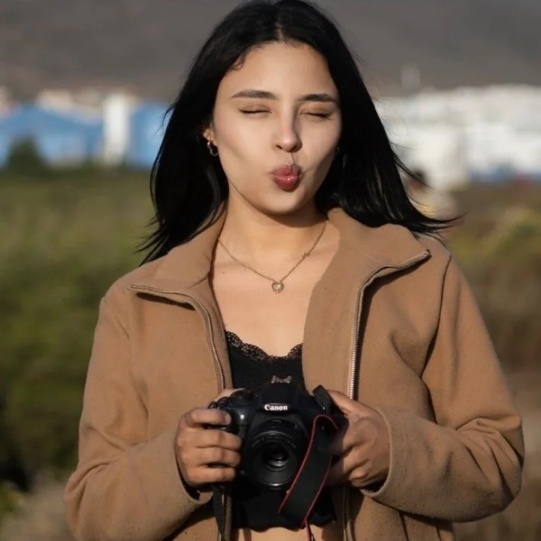
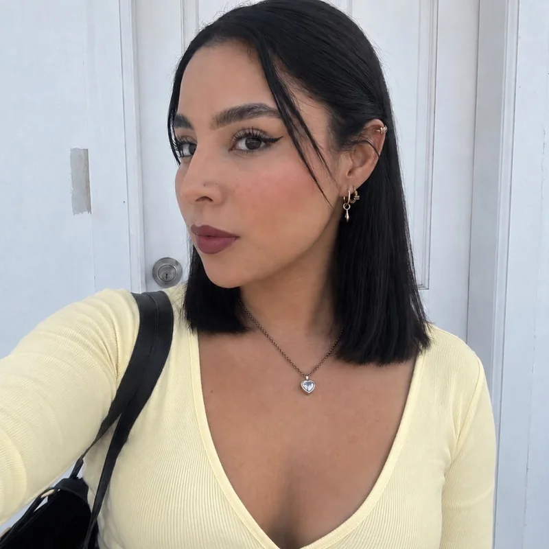
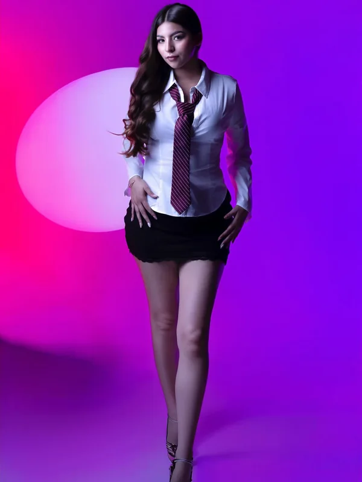
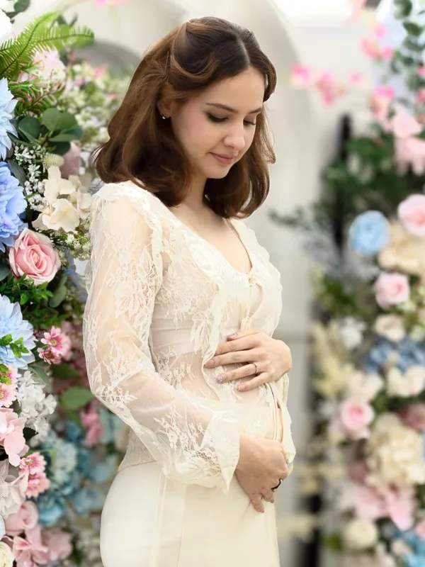
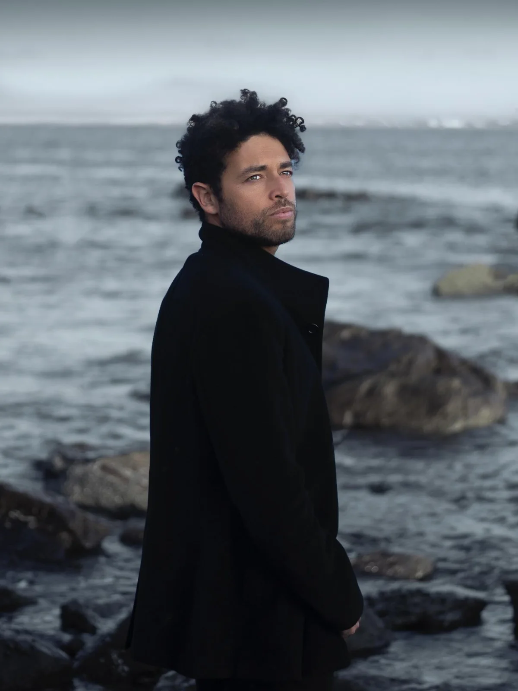

01
Retrato personal
Tu expresión, tu momento, tu forma de estar en el mundo. En estudio o con luz natural.
Quiero mi retrato ↗
ALEXA LARA / FOTOGRAFÍA
FOTÓGRAFA EN LA PAZ & ENSENADARETRATO · EDITORIAL · MEMORIA
Fotografías para sentir el instante.
Y volver a él, una y otra vez.
PERSONAS REALES. HISTORIAS PROPIAS.
LUZ / FORMA / EMOCIÓN
MÁS ALLÁ DE LA IMAGEN
Una pausa en el tiempo.Una expresión, una luz inesperada, una etapa que cambia. La fotografía nos permite detenernos ahí. Y volver, todas las veces que queramos.
ÍNDICE VISUAL / 01
Fotografías por Alexa Lara
Explora la colección.
Abre una imagen. Detente un momento.
Una nueva historia está por llegar a esta colección.


MI MIRADA / ALEXA LARA
“Cada foto cuenta una historia, tu historia.”
Entre La Paz y Ensenada, mi trabajo explora el retrato, la luz y las distintas maneras de contar quiénes somos. Desde una sesión al aire libre hasta una idea que toma forma en el estudio.
Este es un espacio para compartir esa mirada. Y para imaginar juntos lo que viene.
Conoce mi día a díaTU PRÓXIMA SESIÓN
Tres maneras de empezar algo bonito
No necesitas tenerlo todo resuelto.
Una idea, una ocasión o las ganas de crear
son un buen comienzo.
Tu expresión, tu momento, tu forma de estar en el mundo. En estudio o con luz natural.
Quiero mi retrato ↗
Una idea que juega con la luz, el color y la composición. Imágenes con una voz propia.
Tengo una idea ↗
Las etapas que llegan, los vínculos que crecen y las personas que hacen especial tu historia.
Quiero recordarlo ↗Qué te gustaría fotografiar, dónde y cuándo. Compartimos ideas para encontrar el punto de partida.
Conversamos sobre el estilo, la locación y los detalles de tu sesión.
Un momento para estar presente, explorar y dejar que la fotografía cuente tu historia.
ANTES DEL PRIMER CLIC
Las preguntas también
son un buen comienzo.
Cuéntame tu idea en el formulario. Podrás revisar y copiar tu mensaje para enviarlo por Instagram. La consulta es el inicio de la conversación: no reserva una fecha ni genera un pago.
Mi trabajo se mueve entre La Paz, Baja California Sur, y Ensenada, Baja California. Indica la ciudad que tienes en mente para revisar la disponibilidad. Si imaginas otra ubicación, también puedes comentarla.
Está bien empezar por una sensación, una ocasión o una fotografía que te guste. Puedes elegir «Otra idea», dejar la fecha por definir y contarme qué te gustaría recordar.
No tienes que llegar con todas las poses resueltas. Cuéntame cómo te sientes frente a la cámara y qué tipo de imágenes te gustan; podemos conversar sobre el enfoque antes de decidir la sesión.
Solicita una propuesta para tu idea. Antes de confirmar, revisa directamente conmigo el precio, la duración, la locación y las fotografías incluidas. Aquí no se muestran paquetes o condiciones que aún no hayamos acordado.
El plazo, la selección y la forma de entrega se confirman contigo al definir la sesión. Puedes incluir esta pregunta en tu consulta para tener los detalles claros antes de reservar.

CREAMOS ALGO
Cuéntame qué tienes en mente.
Tu próxima historia empieza con un hola.
Una conversación, sin prisas.
Tú eliges qué compartir y cuándo enviarlo.
CUÉNTAME TU IDEA